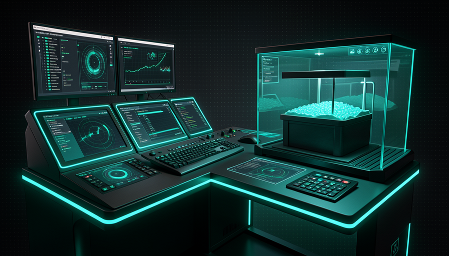
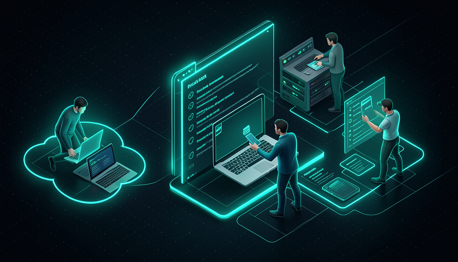
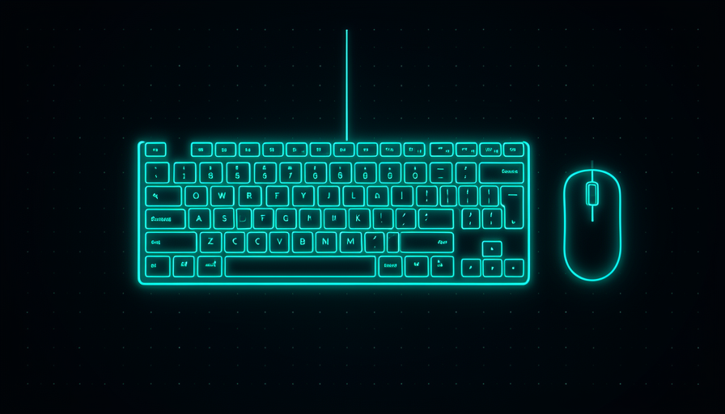

📖 Living glossary (read first — come back whenever you need to)
This module is a ready-to-copy recipe. Before setting things up, get familiar with the new terms in Matt Pocock’s AFK setup:
🖥️ Claude Code + Opus 4.8 medium
🧠 Imagine it this way: Before asking the team to build the whole house, the engineer sits with you at the site, draws the floor plan, and builds the first wall by hand—to make sure the rest follows suit. That’s what Matt does locally with Claude Code before handing off the rest of the work to run AFK.
The heart of Pocock’s setup is simple and nothing exotic: he uses the Claude Code running Opus 4.8 in medium effort. Notice the detail: he no uses the most “hard-working” model available by default (and, in its words, “NOT Fable"). Level medium is the balance point—good enough to plan and implement without spending too many tokens. Remember Track 1: the result is 50/50 between model and harness, so it’s not worth burning the whole budget just by turning up the engine’s “effort.”
There’s also a discipline of patience with a new model: Matt expects about 1 month before adopting a newly released model (he did exactly this with Opus 4.5). Why? Because switching engines every week is the mistake of the vibe coder of Track 1—you spend time re-optimizing instead of building. The local Claude Code is for two things in its workflow: (1) plan the task with you in the loop (human-in-the-loop) and (2) do part of implementation right there, when something is complex or still not well defined. The bulk of repetitive work goes to AFK—which we'll see next. Common mistake: thinking that "AFK" means dropping everything without ever opening Claude Code; in fact, local planning work is what makes AFK work.
Local: Claude Code + Opus 4.8 medium plans and handles part of the work. Repetitive work goes AFK.

⚠️ Common beginner mistake
Adopt the newest model on launch day and maximize "effort," thinking that will solve everything. Matt waits ~1 month and stays on medium on purpose—the real gains come from the harness, not from burning tokens on the engine.
In one sentence: Claude Code + Opus 4.8 medium, local, to plan and do part of the work — the rest goes AFK.
🛰️ AFK via sandbox
🧠 Imagine it this way: you let a cleaning robot roam around your house while you’re out. If it can only work in one locked room (the sandbox), it’s fine to leave it working alone. If it can go anywhere — including your document drawer — you won’t sleep well.
A most of Matt’s work is AFK: it launches the agent and leaves. But there’s one golden rule he won’t compromise on: AFK only inside a sandbox. A sandbox is a closed environment, separate from your real computer. Without it, an agent running on its own can do real damage — in Pocock’s own words, it can "delete your home directory" (delete your user folder) or "exfiltrate env vars" (leak your environment variables—where passwords, API tokens, and keys are stored). It’s not paranoia: it’s the agent acting with no one watching.
The logic is straightforward: who is in the loop (you monitoring) can approve each dangerous step; who is AFK there's no one to approve anything — so the environment needs to be safe by design. The sandbox makes this possible: the agent reads the code, edits it, runs tests, makes commits—but all inside the box. If something goes wrong, you throw the box away and none of your system has been affected. That’s why Matt’s line is “AFK is just incredible — takes a bit of setup, but then it goes": the “bit of setup” is precisely setting up the sandbox once. After that, it scales on its own.
Quick recall: why does Matt only run AFK inside a sandbox?
In one sentence: AFK only inside a sandbox — with no one watching, the environment needs to be safe by design.
🏰 Sand Castle setup
🧠 Imagine it this way: A taxi dispatch center. Each ride (issue) joins the queue, and an available car (a sandbox) takes the ride and handles it alone. The dispatch center doesn’t drive — it assigns and tracks. Sand Castle is the dispatch center; each car is a sandbox.
The specific tool Matt uses for this workflow is Sand Castle. It does two things: (1) runs agents inside sandboxes — and here you choose the sandbox “engine”: Docker or Podman (on your machine) or Vercel sandboxes (in the cloud); and (2) organizes the work as issue queue — each task is a issue that a sandbox picks up and solves. As we saw in Track 4, Matt thinks of development as a task queue, not a loop: "all development is just a queue of tasks".
In practice, the minimum Sand Castle setup is: install the tool, have Docker (or Podman) running, point it to your repository, and provide the agent config — which coding tool (Claude Code), which model (Opus 4.8), and which effort level (medium). From there, you submit an issue ("implement X"), and Sand Castle creates a fresh sandbox, has the agent work there, and produces commits. Why is this so powerful? Because the "bit of setup" is paid for just once—after that, opening a new task is as cheap as creating an issue. Common mistake: trying to run Sand Castle without Docker/Podman active — without the container engine, there’s no sandbox to put the agent in.

Going deeper (optional): Docker, Podman, or Vercel—which one should you choose?
Docker is the industry standard for containers—you probably already have it. Podman is a very similar alternative that doesn’t require a service running in the background with privileges (some prefer it for security). Both create the sandbox on your machine — good for getting started, but it uses your PC’s CPU/RAM. As for the Vercel sandboxes run in the cloud: you don’t use local resources and can parallelize without machine limits—that’s why Matt calls it "not worried about local resources". Rule of thumb: start with local Docker to understand the workflow; move to Vercel/cloud when you want many agents running at once.
In one sentence: Sand Castle is the hub that picks up issues from the queue and runs each one in a sandbox (Docker, Podman, or Vercel).
⚡ Parallelize safely
🧠 Imagine it this way: A restaurant with 5 separate kitchens, each with its own stove. You can prepare 5 dishes at the same time — and if one kitchen catches fire, the other 4 keep going. That’s what isolated sandboxes provide: parallel work without one agent getting in another’s way.
Here's the trick to the AFK setup: since each agent runs in the your own isolated sandbox, you can run many at the same time without one stepping on the other. Matt sums it up: running agents via "Sand Castle on GitHub Actions — unreasonably effective, parallelize as much as you want, not worried about local resources" (irrationally effective, parallelize as much as you want without worrying about local resources). It’s the "two, three, four, five of me" from Track 4 becoming reality: several “yous” working in parallel.
The piece that unlocks parallelism in the cloud is the GitHub Actions. Instead of each agent eating up your laptop’s CPU and RAM, they run on GitHub’s servers—so the number of agents isn’t limited by your machine. But keep an eye on the order of the two rules: parallelizing is only safe because each agent is isolated. Without a sandbox, running 5 agents loose at the same time means 5× the chance of damage. Common mistake: "parallelize to go faster" by turning off isolation — you trade speed for the risk of wiping out the repository. The right approach is: isolate first, parallelize later.
🔬 Worked example: Matt’s morning AFK
A concrete scenario, from plan to delivery, in parallel and safely:
- Local (Claude Code, Opus 4.8 medium): in the morning, they plan 3 tasks with you and open 3 issues in Sand Castle.
- Triggers AFK: Sand Castle creates 3 sandboxes (via GitHub Actions, in the cloud)—one for each issue. It closes the laptop and goes for coffee.
- In parallel: sandbox 1 implements the feature, 2 fixes the bug, 3 refactors. Issue 2 breaks a test—only sandbox 2 fails; the other 2 finish normally.
- Back: 2 PRs ready for review, 1 marked "needs a human." Nothing touched his machine. He pulls the good commits (topic 5).
In one sentence: isolate first, parallelize later — isolated sandboxes let many agents run together without risk.
⬇️ Pull commits back
🧠 Imagine it this way: the kitchen (sandbox) prepared the dish, but it doesn't reach your table on its own — the server brings the tray, you taste it, and only then approve serving it to customers. Pulling the commits is the server's job; reviewing before merging is you tasting the dish.
The agent worked in isolation and generated the result inside from the sandbox. Now there’s one last piece: bringing that result back to your repository. In Git, that result comes as commits in a branch own, wrapped in a PR (pull request). Matt’s workflow fits directly into Trilha 4: the AFK agent produces a PR as output, and the PR is exactly the point where you comes in to review before merging. You don’t take raw code from the sandbox—you get a clean PR, read the diff, and approve it (or request changes).
This is the review checkpoint pushed to the right of Track 4: the human isn't in the middle of every step; they come in at the end, when there’s already a PR ready to review. For good PRs, you merge them; for questionable ones, you ask for another round or take over yourself. Common mistake: leaving the commits “stuck” in the sandbox and never bringing them over—or, at the other extreme, setting up auto-merge without anyone looking. Matt’s middle ground is: agent creates the PR, human approves the PR. Below is a summary of the output flow for you to copy.
# O agente AFK rodou no sandbox e abriu um PR. Traga pra revisar: # 1) ver os PRs que os agentes AFK abriram gh pr list --label "agent:implement" # 2) baixar a branch do PR pra inspecionar localmente gh pr checkout 795 # nº do PR aberto pelo agente # 3) ler o que mudou ANTES de aceitar (você é o checkpoint) git diff main...HEAD # 4a) aprovou? faça o merge gh pr merge 795 --squash --delete-branch # 4b) precisa de ajuste? volte pro Claude Code local e itere # (ou peça outra rodada AFK na mesma issue)

In one sentence: the agent creates a PR; you read the diff and merge it — the commit comes back through the checkpoint, not raw.
📋 Your minimum setup
🧠 Imagine it this way: you don't need the full F1 garage to start training — you need a car that runs and a safe track. The minimum setup below is that "car that runs": the basics of Matt's AFK, with no frills.
Wrapping up the module: here is the minimal setup gathered in one place, ready to copy. There are three blocks — (1) the Claude Code config pinning Opus 4.8 at medium effort; (2) the command to run the AFK agent in a sandbox (Sand Castle pointed at your repo); and (3) the steps to pull the commits back. It’s the exact outline of Matt’s workflow, reduced to the essentials. Start here today, run a a small AFK task, and let the queue grow.
# ── 1) CONFIG DO CLAUDE CODE: Opus 4.8 em medium effort ──
# ~/.claude/settings.json (modelo + esforço fixos, como o Matt usa)
{
"model": "claude-opus-4-8",
"effort": "medium"
}
# (ou na sessão) → /model claude-opus-4-8 | /effort medium
# uso local: planejar + parte da implementação, você junto.
# ── 2) RODAR O AGENTE AFK EM SANDBOX (Sand Castle) ──
# pré-requisito: Docker (ou Podman) ativo → docker info
# instalar e apontar pro seu repo:
npx sandcastle@latest init # cria a config no projeto
# disparar uma tarefa AFK isolada (1 sandbox por issue):
sandcastle run \
--issue 795 \ # a tarefa da fila
--sandbox docker \ # docker | podman | vercel
--agent claude-code \ # ferramenta de codar
--model claude-opus-4-8 \
--effort medium
# paralelizar: dispare várias issues; cada uma vira um sandbox isolado.
# ── 3) PUXAR OS COMMITS DE VOLTA (você é o checkpoint) ──
gh pr list --label "agent:implement" # PRs que os agentes abriram
gh pr checkout 795 # baixar pra inspecionar
git diff main...HEAD # LER o diff antes de aceitar
gh pr merge 795 --squash --delete-branch # aprovou? merge.
Quick retrieval: what is the right order for Matt's minimum AFK setup?
In one sentence: model config + an AFK command in a sandbox + pulling the PR back = Matt’s AFK setup in essence.
🧾 Module Summary
Next module:
5.5 — Review Action + Security Cron: the automation that takes care of itself (Action skeleton, comment on the PR, rotating daily cron).